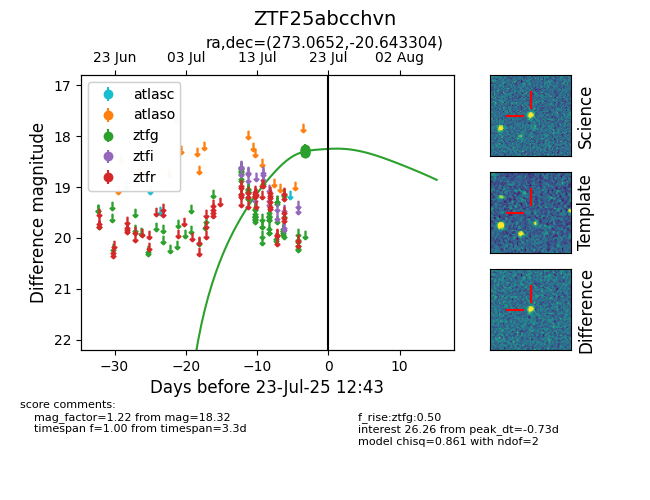

Target ZTF25abcchvn at 2025-07-23 11:52, see:
FINK: fink-portal.org/ZTF25abcchvn
Lasair: lasair-ztf.lsst.ac.uk/objects/ZTF25abcchvn
ALeRCE: alerce.online/object/ZTF25abcchvn
alt names
ZTF25abcchvn (ztf,fink)
coordinates:
equatorial (ra, dec) = (273.0652,-20.64330)
galactic (l, b) = (10.1998,-1.09326)
photometry
last ztfg=18.32
7 ztfg detections
